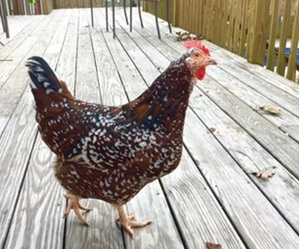
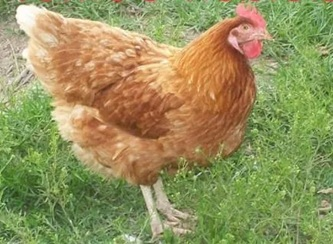

🐔 Choosing the Best Chicken Breed for Eggs
Not all chickens are created equal when it comes to egg production. Some breeds can lay over 300 eggs per year, while others may produce fewer than 150. The right breed for your backyard flock depends on much more than egg count alone.
Factors such as temperament, broodiness, climate tolerance, feed efficiency, and ease of handling can dramatically affect your overall experience as a chicken owner.
This guide compares some of the most popular egg-laying breeds and helps you decide which chickens are the best fit for your goals.
🐔 Chicken Breed at a Glance
If you're looking for a quick recommendation, the table below compares the most popular backyard chicken breeds across the characteristics that matter most to new chicken keepers.
| Breed | Egg Production | Friendly | Cold Hardy | Beginner Friendly | Overall |
|---|---|---|---|---|---|
| Australorp | ⭐⭐⭐⭐⭐ | ⭐⭐⭐⭐⭐ | ⭐⭐⭐⭐⭐ | ⭐⭐⭐⭐⭐ | ⭐⭐⭐⭐⭐ |
| ISA Brown | ⭐⭐⭐⭐⭐ | ⭐⭐⭐⭐ | ⭐⭐⭐⭐ | ⭐⭐⭐⭐⭐ | ⭐⭐⭐⭐⭐ |
| Leghorn | ⭐⭐⭐⭐⭐ | ⭐⭐⭐ | ⭐⭐⭐⭐ | ⭐⭐⭐⭐ | ⭐⭐⭐⭐ |
| Rhode Island Red | ⭐⭐⭐⭐ | ⭐⭐⭐⭐ | ⭐⭐⭐⭐⭐ | ⭐⭐⭐⭐⭐ | ⭐⭐⭐⭐⭐ |
| Plymouth Rock | ⭐⭐⭐⭐ | ⭐⭐⭐⭐⭐ | ⭐⭐⭐⭐⭐ | ⭐⭐⭐⭐⭐ | ⭐⭐⭐⭐⭐ |
| Buff Orpington | ⭐⭐⭐⭐ | ⭐⭐⭐⭐⭐ | ⭐⭐⭐⭐⭐ | ⭐⭐⭐⭐⭐ | ⭐⭐⭐⭐⭐ |
| Wyandotte | ⭐⭐⭐⭐ | ⭐⭐⭐⭐ | ⭐⭐⭐⭐⭐ | ⭐⭐⭐⭐ | ⭐⭐⭐⭐⭐ |
| Easter Egger | ⭐⭐⭐⭐ | ⭐⭐⭐⭐ | ⭐⭐⭐⭐ | ⭐⭐⭐⭐⭐ | ⭐⭐⭐⭐ |
| Golden Comet | ⭐⭐⭐⭐⭐ | ⭐⭐⭐⭐ | ⭐⭐⭐⭐ | ⭐⭐⭐⭐⭐ | ⭐⭐⭐⭐⭐ |
Overall Recommendation: If you're buying your very first chickens, it's difficult to go wrong with Australorps, Buff Orpingtons, or Plymouth Rocks. They balance excellent egg production with calm personalities and are forgiving for beginners.
📋 Table of Contents
- Best Overall Egg Layers
- Best Breeds for Beginners
- Best Friendly Pet Chickens
- Best Cold Weather Layers
- Best Brown Egg Layers
- Best White Egg Layers
- Chicken Breed Comparison Table
- Detailed Breed Profiles
- Frequently Asked Questions
- Related Chicken Tools
📊 Quick Chicken Breed Comparison
| Breed | Eggs Per Year | Egg Color | Temperament | Broody? | Beginner Friendly |
|---|---|---|---|---|---|
| Leghorn | 280-320 | White | Active | Rarely | Yes |
| Rhode Island Red | 250-300 | Brown | Confident | Rarely | Yes |
| Australorp | 250-300 | Brown | Very Friendly | Occasionally | Excellent |
| Plymouth Rock | 200-280 | Brown | Friendly | Occasionally | Excellent |
| ISA Brown | 300+ | Brown | Very Friendly | Rarely | Excellent |
🏆 Best Overall Choice for Most Backyard Flocks
If you are buying chickens primarily for egg production while still wanting friendly birds that are easy to manage, the Australorp is often one of the best all-around choices. They combine excellent egg production with calm personalities, cold hardiness, and good adaptability to a variety of backyard environments.
🥇 Australorp

Australorp hen
The Australorp is widely considered one of the best all-around backyard chicken breeds. Originally developed in Australia from Black Orpington stock, Australorps became famous for their incredible egg-laying ability while maintaining a calm and friendly temperament.
| Trait | Details |
|---|---|
| Eggs Per Year | 250–300 |
| Egg Color | Light Brown |
| Temperament | Very Friendly |
| Broody | Occasionally |
| Cold Hardy | Excellent |
| Heat Tolerant | Good |
| Noise Level | Low |
Australorps are known for being easy to handle, making them a favorite among families and first-time chicken owners. They adapt well to both free-ranging and confined environments.
Pros:- Excellent egg production
- Friendly personality
- Cold hardy
- Great beginner breed
- Can become overweight if overfed
- Occasionally goes broody
🥈 Rhode Island Red

Rhode Island Red hen
Rhode Island Reds are among the most popular egg-laying chickens in North America. They are productive, hardy, and adaptable to a wide variety of climates.
| Trait | Details |
|---|---|
| Eggs Per Year | 250–300 |
| Egg Color | Brown |
| Temperament | Confident |
| Broody | Rarely |
| Cold Hardy | Excellent |
| Heat Tolerant | Good |
| Noise Level | Moderate |
Rhode Island Reds are often recommended to beginners because they are resilient birds that continue laying well even when conditions are less than ideal.
Pros:- Excellent brown egg production
- Hardy and durable
- Rarely broody
- Good for free ranging
- Can be dominant within a flock
- Less cuddly than some breeds
🥚 Leghorn

White Leghorn hen
Leghorns are arguably the world's most famous egg-laying breed and are responsible for much of the commercial white egg production seen in grocery stores today.
| Trait | Details |
|---|---|
| Eggs Per Year | 280–320 |
| Egg Color | White |
| Temperament | Active |
| Broody | Rarely |
| Cold Hardy | Good |
| Heat Tolerant | Excellent |
| Noise Level | Higher |
Leghorns are efficient feed converters and often produce more eggs than almost any other breed. However, they tend to be more independent and less interested in human interaction.
Pros:- Outstanding egg production
- Efficient feed usage
- Rarely broody
- Excellent for hot climates
- Can be flighty
- Less friendly than some breeds
- More difficult to handle
🐔 Plymouth Rock

Barred Plymouth Rock hen
Plymouth Rocks have been a favorite backyard breed for generations. They are dependable layers, friendly birds, and excellent family chickens.
| Trait | Details |
|---|---|
| Eggs Per Year | 200–280 |
| Egg Color | Brown |
| Temperament | Friendly |
| Broody | Occasionally |
| Cold Hardy | Excellent |
| Heat Tolerant | Good |
| Noise Level | Low |
Their calm personality makes them one of the easiest breeds to manage. Plymouth Rocks are often recommended for families with children.
Pros:- Friendly and calm
- Cold hardy
- Good layers
- Easy to handle
- Lower production than Leghorns
- May become broody occasionally
⭐ ISA Brown

ISA Brown hen
ISA Browns are hybrid chickens specifically developed for high egg production. They are often considered one of the best choices for people whose primary goal is collecting as many eggs as possible.
| Trait | Details |
|---|---|
| Eggs Per Year | 300–330+ |
| Egg Color | Brown |
| Temperament | Very Friendly |
| Broody | Rarely |
| Cold Hardy | Good |
| Heat Tolerant | Good |
| Noise Level | Low |
ISA Browns are known for starting to lay early and producing large numbers of eggs throughout their prime laying years.
Pros:- Exceptional egg production
- Very friendly
- Easy to manage
- Excellent beginner bird
- Shorter productive lifespan than heritage breeds
- Can slow down noticeably after peak production years
🐥 Buff Orpington

Buff Orpington hen
Buff Orpingtons are one of the most popular backyard chicken breeds because of their exceptionally calm and friendly personalities. While they don't lay quite as many eggs as Leghorns or ISA Browns, they more than make up for it by being wonderful family birds that tolerate handling extremely well.
| Trait | Details |
|---|---|
| Eggs Per Year | 200–280 |
| Egg Color | Light Brown |
| Temperament | Extremely Friendly |
| Broody | Frequently |
| Cold Hardy | Excellent |
| Heat Tolerant | Fair |
| Noise Level | Low |
Best For: Families, children, first-time chicken owners, and anyone wanting friendly pets.
🌈 Easter Egger

Easter Egger hen
Easter Eggers are loved for one special reason—they lay colorful eggs. Depending on the individual bird, eggs may be blue, green, olive, or occasionally pinkish shades. Every flock becomes more colorful with Easter Eggers included.
| Trait | Details |
|---|---|
| Eggs Per Year | 200–280 |
| Egg Color | Blue / Green / Olive |
| Temperament | Friendly |
| Broody | Occasionally |
| Cold Hardy | Very Good |
| Heat Tolerant | Very Good |
Best For: Families wanting colorful egg baskets and unique-looking birds.
❄️ Wyandotte

Silver Laced Wyandotte hen
Wyandottes are beautiful birds known for their intricate feather patterns and excellent cold-weather performance. They continue laying well during winter months and are a favorite in northern climates.
| Trait | Details |
|---|---|
| Eggs Per Year | 200–260 |
| Egg Color | Brown |
| Temperament | Calm |
| Broody | Sometimes |
| Cold Hardy | Excellent |
| Heat Tolerant | Moderate |
Best For: Cold climates and attractive backyard flocks.
☀️ Sussex

Speckled Sussex hen
Sussex chickens are curious, friendly, and excellent foragers. They enjoy interacting with people and often become one of the friendliest birds in a mixed flock.
| Trait | Details |
|---|---|
| Eggs Per Year | 200–250 |
| Egg Color | Light Brown |
| Temperament | Very Friendly |
| Broody | Occasionally |
| Cold Hardy | Excellent |
| Heat Tolerant | Good |
Best For: Families wanting personable backyard chickens.
🥚 Golden Comet

Golden Comet hen
Golden Comets are hybrid chickens bred specifically for efficient egg production. They mature quickly, begin laying at an early age, and consistently produce large brown eggs.
| Trait | Details |
|---|---|
| Eggs Per Year | 280–320 |
| Egg Color | Brown |
| Temperament | Friendly |
| Broody | Rarely |
| Cold Hardy | Good |
| Heat Tolerant | Good |
Best For: Maximum egg production with minimal management.
🏆 Which Chicken Breed Is Right for You?
| If You Want... | Recommended Breed |
|---|---|
| Most Eggs | ISA Brown or Golden Comet |
| Best Overall Backyard Chicken | Australorp |
| Friendliest Pet | Buff Orpington |
| Best for Children | Plymouth Rock |
| Cold Weather Performance | Wyandotte |
| Colorful Eggs | Easter Egger |
| Commercial-Level Egg Production | Leghorn |
| Beautiful Appearance | Silver Laced Wyandotte |
🏅 How We Chose These Chicken Breeds
Choosing the "best" chicken breed isn't just about finding the bird that lays the most eggs. For this guide, we evaluated each breed using several important criteria that matter to backyard chicken keepers.
- Annual Egg Production – How many eggs a healthy hen typically lays each year.
- Temperament – Whether the breed is friendly, calm, or more independent.
- Broodiness – Some breeds frequently stop laying to hatch eggs, while others almost never become broody.
- Cold and Heat Hardiness – How well the birds adapt to different climates.
- Feed Efficiency – How effectively the breed converts feed into egg production.
- Beginner Friendliness – Ease of care for first-time chicken owners.
- Health and Longevity – General hardiness and expected productive lifespan.
Every backyard flock is different. A family looking for gentle pets may choose Buff Orpingtons, while someone focused on collecting the maximum number of eggs may prefer ISA Browns or Leghorns. By considering all of these factors together, you can choose the breed that best fits your goals and your environment.
🐣 Tips for First-Time Chicken Owners
If this is your first flock, it's often better to start with four to six hens rather than a larger group. This provides enough eggs for most families while keeping feed costs and coop size manageable.
- Choose breeds known for calm temperaments.
- Provide at least 4 square feet of indoor coop space per bird.
- Allow 8–10 square feet of outdoor run space per bird.
- Purchase birds from reputable hatcheries or local breeders.
- Use predator-proof fencing and secure coops.
- Plan for feed, bedding, and healthcare costs before purchasing chickens.
Our Backyard Chicken Flock Planner can help estimate flock size, egg production, and annual feed costs before you purchase your first birds.
🤔 Things to Consider Before Choosing a Chicken Breed
While annual egg production is often the first thing people look at, it shouldn't be the only factor when choosing chickens. Every breed has strengths and weaknesses, and the best choice depends on your goals, climate, and experience level.
🥚 Egg Production vs. Longevity
High-production hybrid breeds such as ISA Browns and Golden Comets can lay well over 300 eggs per year during their peak years. Heritage breeds like Australorps and Plymouth Rocks generally lay slightly fewer eggs annually but often remain productive over a longer portion of their lives.
🌡️ Climate Matters
If you live in colder regions, choose breeds with smaller combs and proven cold hardiness such as Wyandottes, Australorps, Buff Orpingtons, and Rhode Island Reds. In hotter climates, Leghorns and Easter Eggers generally tolerate heat better than larger, heavier breeds.
🐔 Temperament
Families with children often appreciate calm breeds that tolerate being handled. Buff Orpingtons, Plymouth Rocks, Australorps, and Sussex chickens consistently rank among the friendliest backyard breeds.
🐣 Broodiness
Some breeds naturally want to hatch eggs. While this is helpful if you plan to raise chicks naturally, broody hens temporarily stop laying eggs. If your primary goal is egg production, breeds such as Leghorns, ISA Browns, and Golden Comets are less likely to become broody.
🍽️ Feed Efficiency
More productive birds generally consume slightly more feed, but they also convert that feed into more eggs. Leghorns are particularly well known for producing large numbers of eggs while remaining efficient feed consumers.
🏡 Backyard Space
Before purchasing chickens, make sure your coop and run provide adequate room. Overcrowding increases stress, encourages feather pecking, and may reduce egg production. Most backyard flocks benefit from at least 4 square feet of indoor coop space and 8–10 square feet of outdoor run space per bird.
📜 Local Regulations
Many cities and homeowners' associations have rules regarding backyard poultry. Before buying your first chicks, verify local ordinances concerning flock size, rooster ownership, setbacks, and coop placement.
For most families, choosing a calm, beginner-friendly breed that lays 220–280 eggs per year is often a better long-term decision than selecting the highest-producing breed available. Friendly chickens are easier to care for, easier to inspect for health problems, and generally make backyard chicken keeping more enjoyable.
❓ Frequently Asked Questions
Which chicken lays the most eggs?
Leghorns, ISA Browns, and Golden Comets consistently rank among the highest-producing egg layers, often laying 280–330 eggs per year under good management.
What is the friendliest chicken breed?
Buff Orpingtons, Australorps, Plymouth Rocks, and Sussex chickens are widely recognized for their calm personalities and willingness to interact with people.
Which breed is best for beginners?
Australorps, Plymouth Rocks, and Rhode Island Reds are excellent choices because they combine reliable egg production with hardiness and easy management.
Which chickens lay colored eggs?
Easter Eggers commonly lay blue, green, olive, or occasionally pink-tinted eggs, making them a popular addition to backyard flocks.
Do chickens lay eggs every day?
Young laying hens often produce five to six eggs per week, although production naturally decreases during winter, molting, and as birds age.
Which breed is best for cold climates?
Australorps, Wyandottes, Plymouth Rocks, Rhode Island Reds, and Buff Orpingtons all perform well during colder weather.
How long do laying hens produce eggs?
Most hens produce their highest number of eggs during the first two to three years, although many continue laying smaller numbers of eggs for six years or more.
🧰 Helpful Chicken Planning Tools
Continue planning your backyard flock with our free calculators and guides: